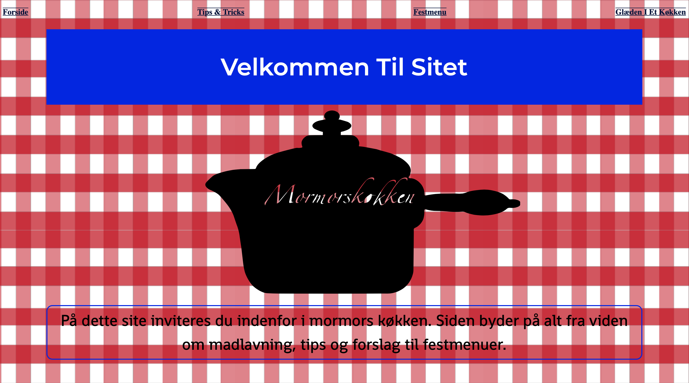

TEMA 2
Grundlæggende Web
Blev vi præsenteret for designprincipper, såsom komposition/layout/grid, typografi, tekst layout og simpel HTML og CSS kodestruktur. Jeg arbejde meget med komposition af min test på sitet, bruge komplementærfarver (blå og rød) i dette tilfælde, da jeg gerne ville skabe kontrast mellem H1 og H2 tester. Jeg valgte at bruge spændende baggrunde som billedstil, for at skabe følelsen af at være i et køkken. Derudover arbejdede jeg i Adobe Illustrator, for at lave den sorte kasserolle der ses på forsiden.
